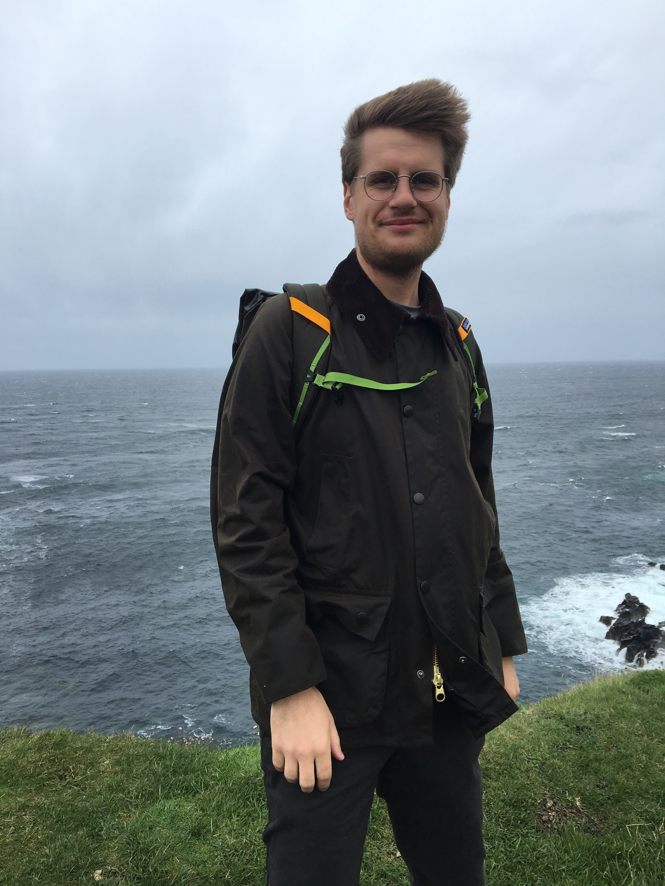

I am a user experience designer with 6 years of experience using design and research methods and code to improve digital services and products for people. I take a human-centered approach for all projects: discovery, prototyping ideas, testing ideas, and iteration.
I believe that technology fundamentally improves lives, and I’m passionate about designing for good. You'll see this belief reflected in my work.
I like to post interesting photos, patterns, and textures on Instagram.
Built with: